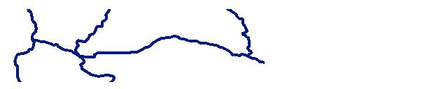

|
|||||||||||
| PREV CLASS NEXT CLASS | FRAMES NO FRAMES | ||||||||||
| SUMMARY: NESTED | FIELD | CONSTR | METHOD | DETAIL: FIELD | CONSTR | METHOD | ||||||||||
java.lang.Object
|
+--com.esri.mo2.map.draw.BaseSymbol
|
+--com.esri.mo2.map.draw.SimpleLineSymbol
A SimpleLineSymbol can render a Polyline using a single Stroke type and a color.
The symbol supports next attrites:
Antialiasing can be true or false, default is false.
Transparency is transparency from 0.0 to 1.0, default ls 1.0
LineColor is line color, default is black.
Stroke is a java Stroke object. The default is solid line.
The result of the next example is shown on the picture.
SimpleLineSymbol stSymbol = new SimpleLineSymbol();

slSymbol.setTransparency(0.6);
slSymbol.setLineColor( new Color(255,0,0) );
slSymbol.setStroke(AoLineStyle.getStroke(AoLineStyle.SOLID_LINE, 4));
Stroke| Field Summary | |
protected Color |
_color
|
protected Composite |
_composite
This constant defines the default jointype. |
protected Dimension |
_dimensionSymbol
|
protected Stroke |
_stroke
|
static Color |
DEFAULT_COLOR
This constant defines the default symbol color. |
static boolean |
DEFAULT_OVERLAP
This constant defines the default overlap value. |
static int |
DEFAULT_TYPE
This constant defines the default symbol type. |
| Fields inherited from class com.esri.mo2.map.draw.BaseSymbol |
DEFAULT_ANTIALIASING, DEFAULT_TRANSPARENCY |
| Constructor Summary | |
SimpleLineSymbol()
|
|
| Method Summary | |
void |
draw(FeatureGeometry g,
Graphics2D g2,
Object values)
This method draws the symbol in graphics context. |
Composite |
getComposite()
Obtains the Composite object. |
Color |
getLineColor()
Obtains he symbol color. |
Dimension |
getMaximumSymbolSize()
The method returns a Dimension of the symbol. |
Stroke |
getStroke()
Obtains the Stroke object. |
void |
setComposite(Composite composite)
Sets the composite object. |
void |
setLineColor(Color color)
Sets the symbol color. |
void |
setStroke(Stroke stroke)
Set the BasicStroke object to be used. |
| Methods inherited from class com.esri.mo2.map.draw.BaseSymbol |
CalcCentroid, clone, filterShadowImage, filterTransparentImage, getAntialiasing, getFieldCount, getFieldName, getRenderer, getTransparency, hasTransparency, setAntialiasing, setRenderer, setTransparency, switchTransform |
| Methods inherited from class java.lang.Object |
equals, finalize, getClass, hashCode, notify, notifyAll, toString, wait, wait, wait |
| Field Detail |
public static final Color DEFAULT_COLOR
public static final boolean DEFAULT_OVERLAP
public static final int DEFAULT_TYPE
AoLineStyle.SOLID_LINE,
Constant Field Valuesprotected Composite _composite
BasicStroke.JOIN_ROUNDprotected Color _color
protected Stroke _stroke
protected Dimension _dimensionSymbol
| Constructor Detail |
public SimpleLineSymbol()
| Method Detail |
public void draw(FeatureGeometry g,
Graphics2D g2,
Object values)
g - the Geometryg2 - the graphics context for renderingvalues - the values of attribute fields, null == is ok and means no field valuesSymbol.draw(com.esri.mo2.cs.geom.FeatureGeometry, java.awt.Graphics2D, java.lang.Object)public void setStroke(Stroke stroke)
stroke - is a Stroke objectStrokepublic Stroke getStroke()
public void setLineColor(Color color)
color - is the symbol color
Note: null is Ok, this means do not draw the line.public Color getLineColor()
public void setComposite(Composite composite)
composite - is a Composite objectCompositepublic Composite getComposite()
public Dimension getMaximumSymbolSize()
getMaximumSymbolSize in class BaseSymbolRenderer.getMaximumSymbolSize()
|
|||||||||||
| PREV CLASS NEXT CLASS | FRAMES NO FRAMES | ||||||||||
| SUMMARY: NESTED | FIELD | CONSTR | METHOD | DETAIL: FIELD | CONSTR | METHOD | ||||||||||